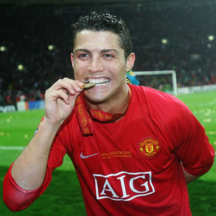

Manchester United
foi fundado em 1878 por um grupo de ferroviários ingleses, que o batizaram inicialmente como “Newton Heath”. Sem muitos recursos na época, o clube tentou durante vários anos ingressar na Liga Inglesa, mas não obteve sucesso. A chance de se juntar à elite do futebol inglês surgiu somente em 1892, com a criação da segunda divisão no país. O desempenho do time na Liga, no entanto, foi um fracasso e, após dez anos de maus resultados, seus diretores concluíram que seria necessária uma reformulação completa no time. Como o clube estava à beira da falência, decidiram realizar um bazar para angariar fundos que viabilizassem os novos investimentos. Apesar do empenho de todos, o bazar foi um fiasco, mal dando para pagar o aluguel do local do evento. Mas a sorte do clube deu uma estranha virada. Harry Stafford, o capitão do time, levou para o bazar o seu cão da raça São Bernardo, que com uma caixa amarrada à coleira, ajudava a coletar doações.
Títulos
Champions League: 3
Campeonato Inglês: 20
Supercopa da Inglaterra: 21
Mundial: 2

Ídolos
- 
Cristiano Ronaldo
O único a conquistar o prêmio de Melhor do Mundo, da Fifa, e a Bola de Ouro, da France Football, atuando no United e na Premier League. Mesmo que possa ser considerado menos ovacionado pela torcida do que outros integrantes dessa lista, o português merece estar entre os dez maiores ídolos do Manchester United.
Eric Cantona
Possivelmente a figura mais emblemática da primeira década da Premier League. Com sua gola alta e a camisa 7, Eric Cantona polemizou, encantou e conquistou muito nos Diabos Vermelhos. Foram apenas quatro temporadas e meia em Old Trafford, mas vividas com a intensidade de dez que o transformaram em um dos grandes ídolos do Manchester United.
Wayne Rooney
O maior artilheiro da história do clube e um dos representantes de uma fase extremamente vencedora. Wayne Rooney merece estar entre os dez maiores ídolos da história do clube do Manchester United. Além de ser o grande goleador da história do United com 253 gols, o único com mais de 250 gols, Rooney também é o sexto atleta com mais jogos com a camisa do clube, tendo disputado 559 jogos pelos Diabos Vermelhos. E sua estreia foi com hat trick, diante do Fenerbahçe, ainda em 2004/2005, pela Champions League.
Denis Law
Integrante da United Trinity, Denis Law é o único jogador da história do Manchester United a ter duas estátuas em Old Trafford. Uma ao lado de Charlton e Best, e a outra em Stretford End, na qual, em seu ápice, comemora um gol correndo, com o dedo indicador em riste. Logo, torna-se fácil entender porque o escocês está nessa lista.
Old Trafford
Fundado em 1910, desde maio de 1989, a capacidade do estádio é de 56 000 espectadores, as cadeiras são todas cobertas com placa de vidro especialmente fabricada para Old Trafford, o campo dispõe de uma vasta gama de recursos ao nível de escoamento de água, vestiários de luxo, banco dos suplentes aquecido e segurança. Em 1996, recebeu melhorias para o Europeu de futebol em 2000 e foi ampliado para 67.500 lugares com a construção da nova arquibancada Leste, fazendo dele o segundo maior estádio na Inglaterra só batido pelo famoso Wembley.